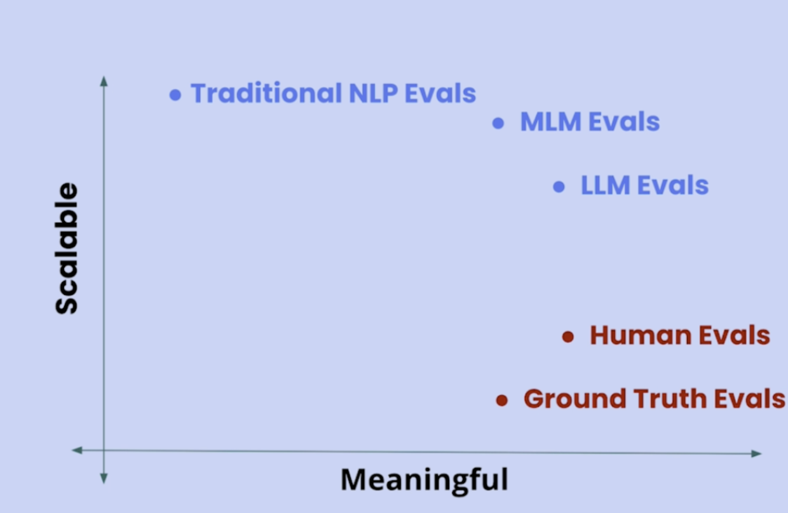
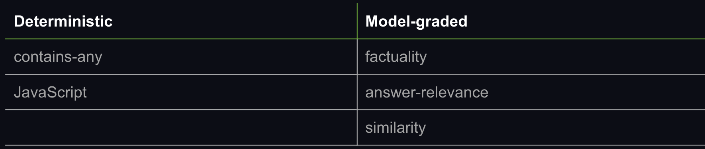
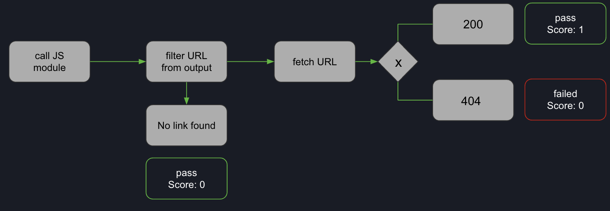
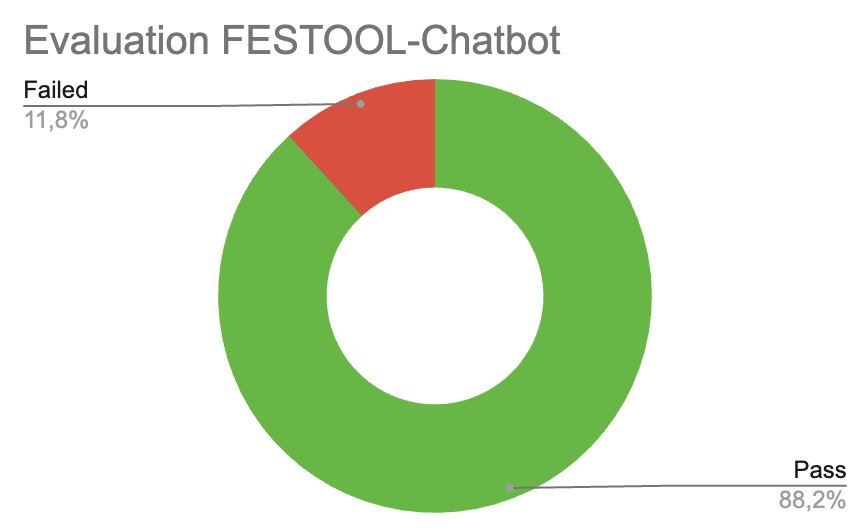

5 Evaluation of the Model
Unsere Gruppe stand vor einer besonderen Herausforderung bei der Auswertung unserer LLM-Applikation. Vorerst hatten wir uns dazu entschieden die Applikation über einen Vektordatenbank zu handhaben mit den dazugehörigen Framework Langchain. Anfang November präsentierte dann OpenAI die Assistant API und nach ersten Evaluationen der beiden haben wir gemerkt, dass die Assistant API weitaus bessere Ergebnis und schnellere Ergebnisse liefert als Langchain in Kombination mit der Vektordatenbank. Anschließend haben wir uns also für die Assistant API entschieden und nutzen diese.
Wir haben uns zudem dazu entschieden, bei der Evaluation des Chatbots auf den Produktbereich “Sägen” zu fokussieren. Die Vorgehensweise ist auf andere Produktkategorien anwendbar.
5.1 Richtigkeit und Verlässlichkeit des Chatbots
5.1.1 Warum Evaluieren?
In diesem Kapitel beschäftigen wir uns damit, warum ein LLM evaluiert werden sollte. Die Evaluation von RAG (Retrieval-Augmented Generation) und LLM (Large Language Models) ist entscheidend, um ihre Leistungsfähigkeit, Anwendbarkeit und Zuverlässigkeit in verschiedenen natürlichsprachlichen Aufgaben zu verstehen. Die Evaluation ermöglicht den Vergleich der Leistung von RAG und LLM mit anderen Modellen oder Methoden. Dies ist wichtig, um herauszufinden, ob diese Ansätze tatsächlich Fortschritte in Bezug auf die Qualität der generierten Inhalte oder die Effektivität des Information Retrievals bieten. Zudem können die Stärken und Schwächen der Modelle identifiziert werden. Dies ist entscheidend, um die Anwendungsgebiete zu bestimmen, in denen die Modelle am effektivsten sind, sowie potenzielle Einschränkungen zu erkennen. Weitergehend kann durch das Evaluieren Entwickler und Forscher Bereiche identifizieren, die verbessert oder weiter optimiert werden müssen. In unserem Fall kann der Prompt so geschrieben werden, dass der Bot bestmögliche Antworten liefert und zudem nicht anfängt zu halluzinieren. Dies trägt zur kontinuierlichen Entwicklung und Verbesserung solcher Modelle bei. Ein weiterer wichtiger Bereiche ist die Benutzerakzeptanz, die eine wichtige Rolle spielt, insbesondere wenn Modelle für reale Anwendungen vorgesehen sind. Durch die Evaluation kann festgestellt werden, ob die generierten Ergebnisse den Erwartungen der Benutzer entsprechen und in den beabsichtigten Anwendungsbereichen nützlich sind. Auch Ethik und Sicherheit dürfen nicht ausgelassen werden, um potenzielle ethische und sicherheitsrelevante Bedenken zu identifizieren, wie zum Beispiel das Vermeiden von unangemessenen oder bösartigen Inhalten. Zusammenfassend ist die Evaluation ein integraler Bestandteil des Modellentwicklungsprozesses, um sicherzustellen, dass die Modelle in der Lage sind, die gewünschten Aufgaben effektiv und zuverlässig zu bewältigen.
5.1.2 Vorgehen
Vorerst evaluierten wir den Bot händisch mit verschiedenen Fragen und haben dann manuell entschieden, ob der Bot die richtige Auswahl des Produkts getroffen hat. Grundsätzlich ist dies eine Möglichkeit einen Bot zu evaluieren und damit den Prompt bestmöglich zu gestalten, erfordert aber viel Aufwand. Hier stellt wir und Prof. Dr. Kirenz also schnell fest, dass wir eine skalierbare Lösung brauchen, um unseren Bot und damit den Prompt bestmöglich zu testen, um dann zu schauen welcher Prompt bestmöglich geeignet ist.

Da wir unsere Assistant API auswerten wollten, haben wir uns auf die Suche nach einem Framework gemacht, mit dem wir automatisiert und skalierbar unseren Bot evaluieren können. Hier sind wir auf das Framework Promptfoo gestoßen.
5.1.3 Promtfoo:
- Mit 1,8 k GitHub Stars vs. Trulens 1,1 k Github Stars etwas bekannter
- TypeScript Framework
- Ersteller war bereits bei NASA und Google beschäftigt und ist derzeit Softwareengineer bei Discord
- Auswerten Multipler Prompts
- Unterschiedliche Metriken zur Evaluation
Wir haben uns dazu entschieden Promptfoo zu nutzen, da wir unseren Assistant direkt integrieren können.
5.1.4 Welche Metriken nutzen wir zur Evaluation:

Contains-any:
Überprüft ob ein Wert aus einer Liste an möglichen Values in der Antwort vorhanden ist.
Java Script:
Eigens Entwickeltes js Test-File. Überprüft ob ein Link vorhanden ist. Ist dieser TEil der Antwort, wird die funktionsweise des Links überprüft.

Factuality:
Misst, ob die LLM Ausgabe auf der Wahrheit beruht. Hier wird ein Wert formuliert, der anschließend getestet wird. Beispiel: Prompt: Schlage mir eine Stihl Säge vor. Output: Der vom LLM ausgegebener Text Referenz Wert: Die Antwort bezieht sich auf ein Produkt von FESTOOL -> Anschließend wird ausgegeben: 1 = Pass oder 0= fail
Es wird überprüft, ob der Chatbot halluziniert.
Answer-Relevance:
Bei dieser Metrik wird vorerst die erhaltene Antwort genommen und basierend darauf werden Kandidaten-Fragen generiert. Kandidaten-Fragen sind alternative Formulierungen und Varianten der gestellten Frage. Anschließend wird der Mittelwert der Cosinus Ähnlichkeit zwischen den generierten Fragen und der eigentlichen Frage berechnet. Das Ziel dahinter ist es sicherzustellen, dass die generierte Antwort nicht nur auf die spezifischen Formulierungen passt, sondern auf verschiedene Formen oder Ausdrucksweisen der gleichen Fragen. Eine Antwort wird also als relevant angesehen, wenn sie direkt und angemessen auf die ursprüngliche Frage eingeht. Wichtig ist, dass wir bei der Bewertung der Relevanz einer Antwort nicht die “factuality” berücksichtigen, sondern die Fälle betrachten und als “failed” raten, in denen die Antwort unvollständig ist oder redundante Details enthält.
Similarity
Semantische Bewertung bezieht sich darauf, die Verwandtschaft zwischen dem erwarteten und dem ausgegebenen Text zu analysieren, indem man sich auf ihre zugrunde liegenden Bedeutungen konzentriert, anstatt sich ausschließlich auf exakte Wort Übereinstimmungen zu verlassen. Dies wird mit Textembedding-Modellen wie dem Ada-Modell von OpenAI durchgeführt. Um die Semantische Similarity zu berechnen, erfolgt zunächst ein Aufruf an eine Embedding API. Das zugrunde liegende Modell ist das OpenAI Embedding Modell.
Anschließend wird eine Cosinus Ähnlichkeit der beiden Vektoren berechnet.
5.1.5 Ergebnis:
Das Excel-Sheet präsentiert die Ergebnisse unserer Evaluation, bei der sechs verschiedene Prompts getestet wurden. Diese wurden hinsichtlich der Metriken “contains any,” “javascript (check URL),” “factuality,” “answer relevance” und “similarity” überprüft. In der Spalte “Value” sind die Produkte aufgeführt, die gefunden wurden. Wenn in einer Spalte kein Produkt angezeigt wird, kann dies zwei Gründe haben. Erstens könnte ein JavaScript durchgeführt worden sein, das lediglich testet, ob der Link verfügbar ist oder nicht. Eine weitere Möglichkeit besteht darin, dass der Bot auf ein Produkt angesprochen wurde, das nicht von Festool geführt wird, wie beispielsweise ein Rasenmäher, oder der Bot auf eine andere Marke angesprochen wird. Die Spalte “Variable” ist nur für den ersten Prompt relevant, da dieser für verschiedene Sägearten getestet wurde.
Die Spalte “Output” zeigt die Antwort des Bots mit dem entsprechenden Link, falls vorhanden. Die Spalte “Test Passed” gibt Auskunft darüber, ob die Prüfung bestanden wurde oder nicht, und die Spalte “Score” führt das Ergebnis der Prüfung auf.
Das Evaluationsergebnis des Bots ist beeindruckend, mit beeindruckenden 88,6% bestandenen Tests und lediglich 11,4% nicht bestandenen Tests! Das bedeutet, dass der Bot in erstaunlichen 88,6% der Fälle die korrekte Antwort liefert.

Link zum Excel-Sheet bei dem alle relevanten Testergebnisse aufgelistet sind
Hinweis: nicht alle angezeigten Tests im Promptfoo Dashboard sind relevant. Einige testen auch auf Dinge, die keinen Sinn ergeben. Grund ist, dass bei einem Testdurchlauf immer alle Tests gegen alle Prompts getestet werden. Wir haben daher die relevanten Tests in der Excel Tabelle zusammengefasst
5.2 Manuelle Messung der Verbesserung der User Experience (UX):
Testszenario 1: Ein Kunde (Heimwerker) möchte eine allrounder Tauchsäge mit Akku.
Manuell:
Vorgehensweise: Der User muss auf die Produktübersicht gehen und die Kachel “Sägen” wählen. Anschließend werden ihm sehr viele Geräte angeboten. Für einen Heimwerker ist die Auswahl enorm. Er benötigt Zeit um alles anzusehen. Um schneller vergleichen zu können Nutzt er die Vergleichs option, die Festool bereits auf ihrer seite anbietet. Jetzt wählt er vier zufällige Modelle aus. Schnell fällt auf, dass nach Auswahl aller Modelle bereits 40 Sekunden vergangen sind. Jetzt gilt es, sich etwas auszukennen und die verschiedenen Features der Tauchsägen miteinander zu vergleichen. Dies dauert in unserem Test deutlich über 2 Minuten. DAbei fiel auch auf, dass es nur eine Tauchsäge mit Akku gibt. Das ist ein Pluspunkt der Vergleichsseite. Alternativ kann der Kunde auch die Kachel ‘Akkuwerkzeug’ auswählen. Jedoch hat in unserem Test die Testperson den Reiter ‘Sägen’ gewählt.
Dauer: > 4 Minuten
Chatbot:
Prompt: Ich möchte eine allrounder Tauchsäge mit Akku für Heimwerker.
Antwort: Für Heimwerker empfehle ich die Akku-Tauchsäge TSC 55 KEB-Basic. Sie bietet Sicherheit durch KickbackStop und flexible Anpassungen an das Material mit hoher Schnittleistung.
Evaluation: Der Chatbot empfielt dem Heimwerker das einzige Modell das Festool anbietet, welches mit Akku betrieben werden kann. Der Bot verlinkt das passende Gerät gleich, dadurch ist eine Suche nicht nötig. Für die Eingabe des Prompts wurden 15 Sekunden benötigt. Die Antwort kam nach weiteren 19 Sekunden.
Dauer: 34 Sekunden
Fazit: Der Chatbot beschleunigt die Auswahl von Produkten für Heimwerker oder solche Personen, die weniger vertraut mit Werkzeugen sind!
Testszenario 2: Ein Kunde sucht eine leichte Kappsäge für die Baustelle.
Manuell:
Vorgehensweise: Der Kunde wählt den Reiter Werkzeuge und sieht bereits eine Kachel auf der eine Kappsäge abgebildet ist. Er wählt die Kachel aus und nutzt die Vergleichsfunktion für alle angebotenen Kappsägen (3 Stück). Nun kann er die Gewichte miteinander vergleichen. Nach lesen der Unterschiede entscheidet sich der Kunde für das Günstigere Modell mit Kabel.
Dauer: 3,20 Minuten
Chatbot:
Prompt: Ich suche eine leichte Kappsäge für die Baustelle.
Antwort: Für den Einsatz auf der Baustelle empfehle ich Ihnen die Kapp-Zugsäge KAPEX KS 60 E. Sie ist kompakt, leicht und dank ihrer ergonomischen Tragegriffe einfach zu transportieren. Weitere Informationen finden Sie hier.
Evaluation: Der Chatbot empfielt und verlinkt das extra für die Montage geeignete Modell ohne Akku. Zudem ist das Modell günstiger, als der Akku betriebene Bruder. Nach eingabe des Prompts (10 Sekunden) und der Antwort (12 Sekunden) kommt der Kunde in nur 22 Sekunden an das vorgeschlagene Modell. Die passende Säge hat er vorgeschlagen jedoch nicht erwähnt, dass es zwei Arten dieser Säge gibt. Eine Akku und eine Netz Variante.
Dauer: 22 Sekunden
Fazit: Der Bot empfielt dem Kunden eine geeignete Säge. Dies ist eine brauchbare Antwort. Dennoch gibt es hier zwei Sägenn, die nahezu identisch sind. Der Hauptunterschied liegt bei der Stromzuführung. Der Bot empfiehlt jedoch die Säge, die auf der Produktseite mit “Verzichtet auf alles, was auf Montage überflüssig ist”, beschrieben wird. Daher ist die Antwort in soweit korrekt. Jedoch wäre eine Erwähnung der Stromversorgung wünschenswert gewesen. Dennoch ist der Kunde durch den Einsatz des Bots deutlich schneller zu einem Produkt gekommen als durch die manuelle Suche nach einer geeigneten Säge.